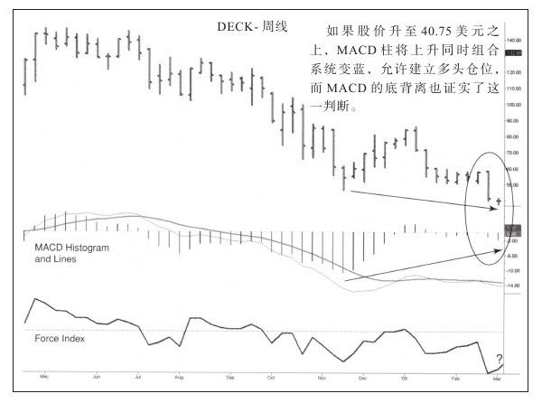
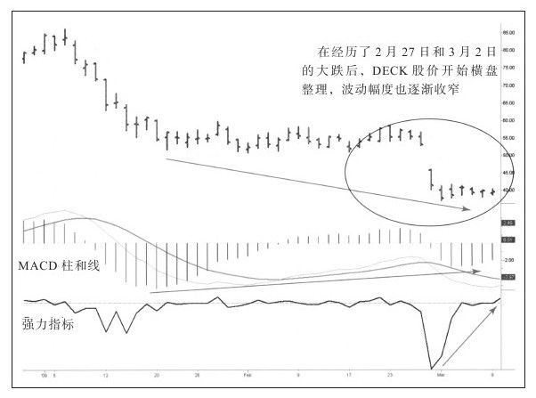
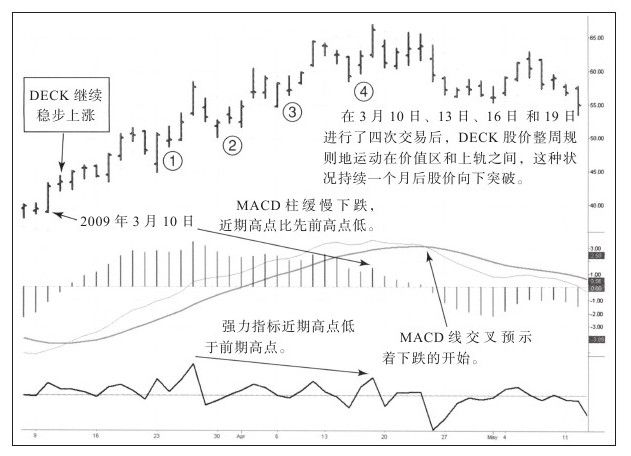

图10-3至图10-5是三幅德克斯户外公司（DECK）的周线走势图，除此之外还有几张日内图（为节省空间，在此省略）。这些图是史蒂夫·奥尔康发给我的，他也是Spike交易集团的一员。他写道：我初次交易时就开始写日记，这是在2009年3月10日大幅上涨的第一天。我做多DECK，股票涨了6周，尽管赚了点钱，但交易得很笨拙。当我回头看那些美好的日子时，我学到的一课是突然出现那种不需要很多经验和技巧就能赚钱的机会很少，真是往日不同今时啊。
史蒂夫是个谦虚的人，他在Spike交易集团中表现得很好，这幅图的评论就出自他手。我常对学员说：教一门技巧很难，学习一门技巧更难。好像史蒂夫已经听过我的课程，所以他才有勇气在多数人充满恐惧、站在场外时应用这些规则。
在史蒂夫的评论或图表上不必再添加什么，请注意他是如何把图表变为计划工具和日记工具的。在交易生涯初期，我常在图表上写上很多关于技术指标信号的话语，现在我只用很少的箭头或圆圈标注我认为重要的要素。



史蒂夫以非常职业的交易者行为不断地交易相同的股票。多数交易者交易股票时，无论盈亏，很快都转向下一只股票，他们就像酒吧里不可靠的男人一样，总是试图和不同的女人聊天，但从没有花时间发展与其中之一的关系。他们也拒绝别人看不起他，如有人忽略他们的存在，他们就不再同那个人说话。职业交易者与此相反，他们往往交易相同的股票，尽管可能面临多次止损，但交易同一只股票没有问题，最终他们会在预期的方向上获得好的入场位置。尽管史蒂夫在股票交易方面还有些经验不足，但他在这只股票上做了几次波段，直到MACD线出现死叉，此时他明白DECK的运动模式已经发生了改变。
在交易生涯的早期，我常在日记中大篇幅记录我的心理状态，常写下入场和出场的感受，这让我受益匪浅。把头脑当成交易工具，关注其运行规律会帮你成为成功的交易者。在获得经验之后，心理状态会很好，而此时交易者也该把关注的焦点转向风险控制和资金管理。